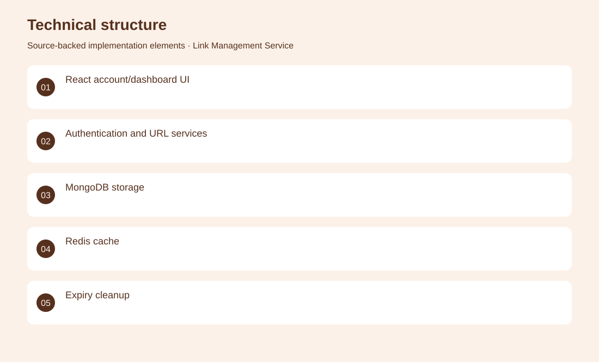
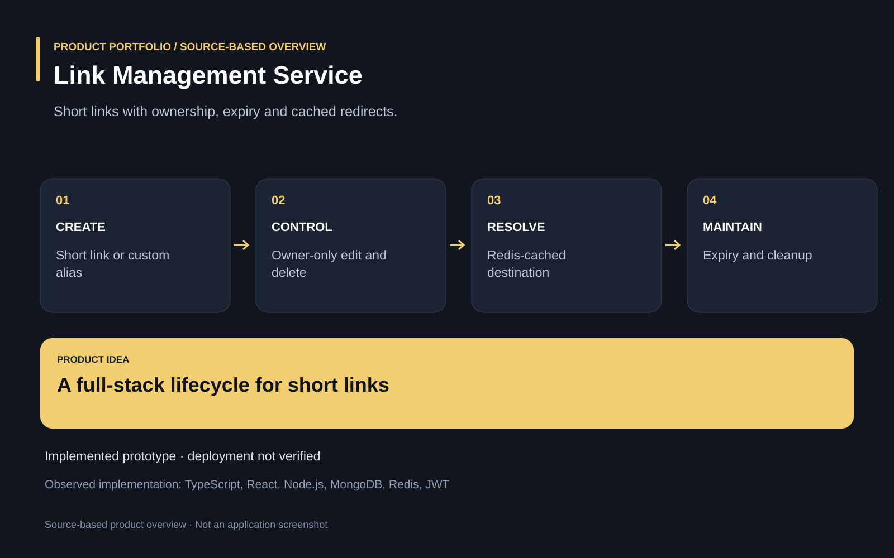

The project
Managing short links requires more than generating an alias: owners need control, expiration and visibility into use. A full-stack application connects authenticated link management with MongoDB persistence, Redis caching, custom aliases and expiry handling. Implemented URL services, ownership checks, cache invalidation, frontend account pages and dashboard interactions. Implemented prototype; public deployment, load capacity and production security have not been verified in this review.
The problem
Managing short links requires more than generating an alias: owners need control, expiration and visibility into use.
The solution
A full-stack application connects authenticated link management with MongoDB persistence, Redis caching, custom aliases and expiry handling.
My contribution
Implemented URL services, ownership checks, cache invalidation, frontend account pages and dashboard interactions.
Technical structure

Product overview

The portfolio cover is an editorial illustration. No live product screenshot is presented for this project.
Showcase assets
{kind=link}
{kind=link}
{kind=link}
New portfolio identity. Newly designed marks are portfolio treatments, not claims of official client branding.